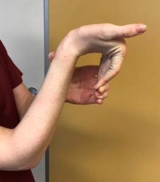

Às vezes, é bom não sair por aí falando toda a verdade a todo momento
Apresentação
Olá, bem-vindo a minha página pessoal!
Me chamo Everaldo, tenho 17 anos e gosto de passar o tempo com jogos, séries e filmes. Meu filme favorito é Jumanji, já minha série favorita é Lock & Key e meu jogo favorito é Mobile Legens. Tenho um sonho de trabalhar na área de programação, por isso pretendo fazer faculdade de engenharia de software, porque é a área que, até agora, me chamou mais atenção. Tenho outro sonho também, que é poder realizar os sonhos de meus familiares, pois são quem estão comigo nas piores e melhores fases da minha vida sem qualquer cobrança de algo em troca.
Curiosidades
- Sou um cara esforçado;
-
 Gosto de jogos do tipo MOBA;
Gosto de jogos do tipo MOBA; - Não gosto de atrasos;
-  Tenho hipermobilidade nos dedos da mão.
- Sou um pouco tímido.
Educação
| Ano | Escola |
|---|---|
| 2012 | Escola Municipal Professora Adele de Oliveira |
| 2013 | Escola Municipal Professora Adele de Oliveira |
| 2014 | Escola Municipal Professora Adele de Oliveira |
| 2015 | Escola Municipal Professora Adele de Oliveira |
| 2016 | Escola Municipal Professora Adele de Oliveira |
| 2017 | Escola Municipal Professora Adele de Oliveira |
| 2018 | Escola Municipal Professora Adele de Oliveira |
| 2019 | Escola Municipal Professora Adele de Oliveira |
| 2020 | Escola Municipal Professora Adele de Oliveira |
| 2021 | Instituto Federal do Rio Grande do Norte |
| 2022 | Instituto Federal do Rio Grande do Norte |
| 2023 | Instituto Federal do Rio Grande do Norte |
Causos
Uma certa tarde, por volta das 12:50, eu estava no ifrn conversando com dois colegas, depois de um tempo conversando, começando a falar de um outro colega que estuda na nossa sala. Num certo momento, um dos colegas cita o nome do colega que estávamos falando sobre, aí, na hora que ele falou, o colega citado chegou na sala. Nessa hora todos conseguiram desfarçar que estavámos falando dele, mas eu não, comecei a rir. O pior era que eu estava bebendo água na minha garrafa e aí saiu água pra todo lado. Essa experiencia me lembrou o ditado "falando no capeta, o capeta aparece".
Habilidades
1ª Habilidade
Ser sincero na hora certa
⇡
2ª Habilidade
Jogos MOBA
O fator competitivo é uma adrenalina pura. Você luta em equipes, se enfrenta em batalhas intensas e vê quem manda melhor no campo de batalha virtual. É como um jogo de xadrez, mas com dragões e magias!
⇡
3ª Habilidade
Ser percistente
A persistência é aquela qualidade que faz alguém teimoso no bom sentido. É quando você não desiste fácil tendo em mente um objetivo firme na cabeça.
⇡
4ª Habilidade
Programação
Gostar de programação é curte desafios lógicos e resolver quebra-cabeças. É tipo um jogo de enigmas interminável, mas em vez de escapar de uma sala trancada, você tá construindo coisas legais com código.
⇡
5ª Habilidade
Ouvir as pessoas
É uma forma de se conectar com os outros. Quando a gente ouve alguém de verdade, mostra que se importa. Escutar é tipo dar uma força, fazer a outra pessoa se sentir ouvida e valorizada.
⇡